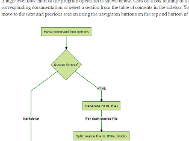
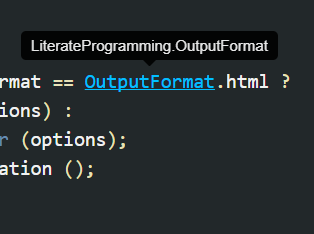
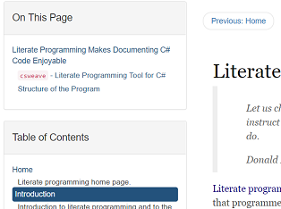

Produce good-looking, interactive documentation for your C# projects using literate programming. Write comments in markdown and create fully functional web sites that can be published on GitHub or other web hosting services.
Generate either raw markdown files or static web sites with everything included. Use themes and parameters to customize the sites. You can include a YAML front matter in your source files to pass parameters to themes.
Markdig library is used to convert the markdown to HTML. It enables a lot of useful extensions from MathJax formulas to mermaid diagrams.


The tool uses Roslyn to parse and analyze source code. Syntactic and semantic information provided by Roslyn is used for syntax-highlighting and for adding cross-references and type information in code snippets. You can jump to the definition of a symbol by clicking it, or inspect its type by hovering over it.
Navigation panes are added automatically to help find a specific topic. Table of Contents file outlines the structure of the documentation. TOC file can be automatically generated and updated. The outputted web pages will show the TOC in a sidebar as well as navigation buttons that jump to the previous and next section.

Go to the releases page to download the latest version. You can also clone the repository and build the tool from the sources.